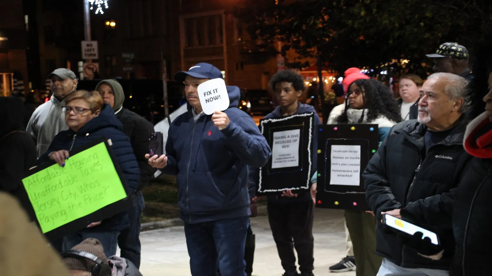
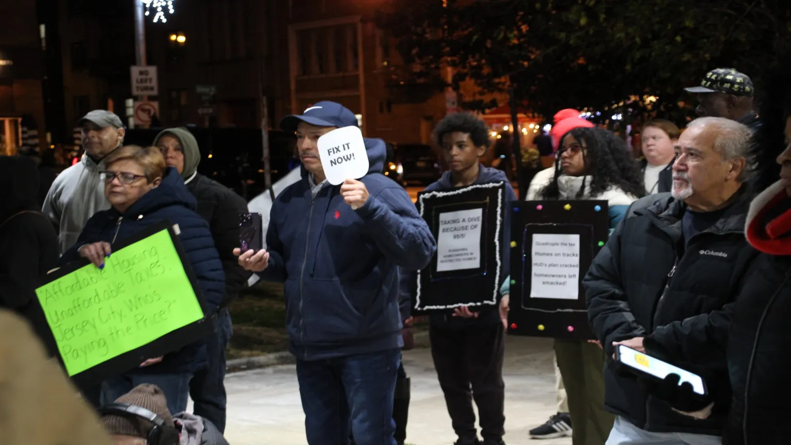

About
Hey there! I’m James Dillon Minto, but everyone calls me Dillon — and this is my world! I’m 13 years old and love mixing tech, sports, creativity and activism to make awesome things happen.
When I’m not coding a video game or creating GIFs, you’ll probably find me running track, playing soccer or coming up with new ideas to help my community. I’ve spent my summers learning cool stuff at ID Tech, Liberty Science Center, NYU and Montclair State University, exploring everything from science and coding to game design and teamwork.
I’ve also taken part in protests and community events because I believe kids can make a difference too. You might even see me in a newspaper article or two!
This site is all about what I love — learning new things, being creative and having fun while doing it. Thanks for stopping by and checking out my adventures! 🌟
- Camps: ID Tech, Liberty Science Center, NYU, Montclair State
- Interests: Video game programming, GIF art, environmental ideas
- Sports: Track & soccer — photos and videos included
- Activism: Protest photos & news article link
.jpg) 

Camps
Summer camps & certificates (ID Tech, Liberty Science Center, NYU, Montclair State).
Creative Work
GIFs, game programming screenshots and creative posters.
Sports
Track & soccer photos and videos.
News & Activism
Protest photos, article link, and community events. Please Click on read article to study entire News Article